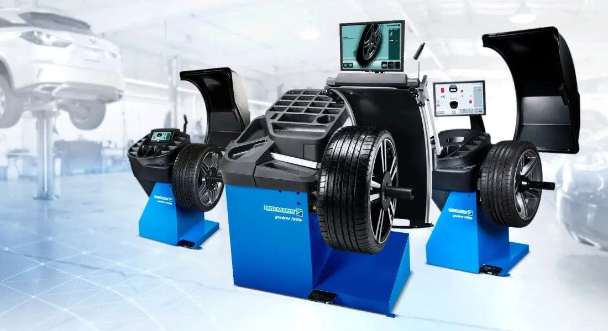

La balanceadora de ruedas es una herramienta fundamental en cualquier taller mecánico o gomería. Sin embargo, su mal uso puede generar resultados imprecisos, pérdida de tiempo y clientes insatisfechos. En este artículo repasamos los errores más comunes al utilizar una balanceadora y cómo evitarlos para garantizar un trabajo profesional.
1. No limpiar correctamente la llanta antes del balanceo
Error: Muchos operadores colocan la rueda directamente en la máquina sin limpiar la llanta. El polvo, la suciedad o el óxido pueden generar una lectura incorrecta.
Solución: Antes de montar la rueda en la balanceadora, limpiá bien la superficie interior de la llanta, especialmente donde se colocarán los pesos. Una buena limpieza mejora la precisión y asegura una mejor adherencia de los contrapesos.
2. Colocar mal el cono central o elegir el cono incorrecto
Error: El centrado es clave. Si el cono está mal colocado o no corresponde al diámetro del centro de la rueda, la medición será inexacta.
Solución: Asegurate de usar el cono adecuado para cada tipo de rueda. Verificá que la rueda esté bien centrada y firmemente sujeta antes de iniciar el proceso de balanceo.
3. Usar contrapesos de mala calidad o mal colocados
Error: Los contrapesos baratos pueden despegarse fácilmente o tener un peso impreciso. Además, colocarlos en el lugar equivocado anula todo el trabajo.
Solución: Utilizá contrapesos de calidad y seguí las indicaciones de la máquina para posicionarlos correctamente. En balanceadoras digitales o 3D, el equipo suele indicar con precisión la ubicación.
4. No calibrar la máquina con regularidad
Error: Con el uso, las balanceadoras pueden descalibrarse, lo que lleva a lecturas incorrectas incluso si se usa bien.
Solución: Calibrá la balanceadora periódicamente, siguiendo las instrucciones del fabricante o del proveedor técnico. Un equipo bien calibrado garantiza precisión en cada servicio.
5. No verificar el estado del neumático o la llanta
Error: A veces se intenta balancear una rueda con llanta doblada, neumático deformado o con excesivo desgaste, lo que hace imposible un balanceo correcto.
Solución: Antes de balancear, inspeccioná visualmente el conjunto neumático-llanta. Si hay deformaciones o daños evidentes, informáselo al cliente y evaluá si conviene reparar o reemplazar.
6. Apurar el proceso sin esperar que la máquina finalice su ciclo
Error: Cortar el ciclo antes de tiempo o retirar la rueda antes de que la máquina indique que está balanceada puede causar errores importantes.
Solución: Dejá que el equipo complete el ciclo completo de balanceo. Solo retirala cuando la máquina indique que la rueda está correctamente balanceada.
Conclusión
El uso correcto de la balanceadora no solo mejora el servicio al cliente, sino que también protege la reputación y la rentabilidad de tu taller. Evitar estos errores comunes es clave para ofrecer un trabajo profesional y preciso.
¿Buscás una balanceadora confiable para tu taller?
En Trivium Pro tenemos balanceadoras digitales y automáticas pensadas para talleres exigentes. Asesoramiento técnico, repuestos y garantía asegurada en todo el país.
👉 Contactanos para conocer los modelos disponibles.